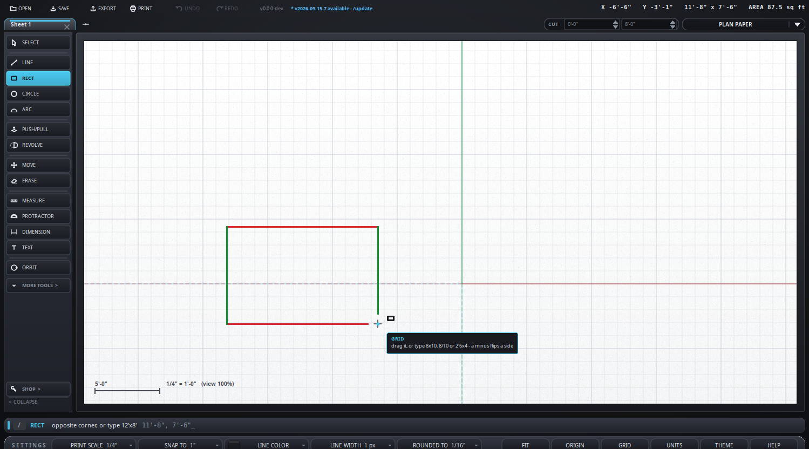

Click the opposite one - or type the size and press Enter.
Typing the size
8x5 - eight by five, in whatever the drawing is in.
8/5 - the same, and the slash is on the number pad.
2'6x4 - two foot six by four.
8, - sets that side and leaves the other on the cursor.
A minus flips a side the other way: -8x5 runs left instead
of right.
Worth knowing
It comes out as a face, not four lines, so it is ready to push up
straight away.
In a 3D view the arrow keys pick the plane before you start: left or
right stands it upright, up or down lays it flat.
Draw one over another and the edges cut each other where they cross, so
each piece can be erased on its own.
What it looks like

One corner down and the other on the cursor. The sides take the colors of the two axes they run along, and the size and area are in the corner as you drag.